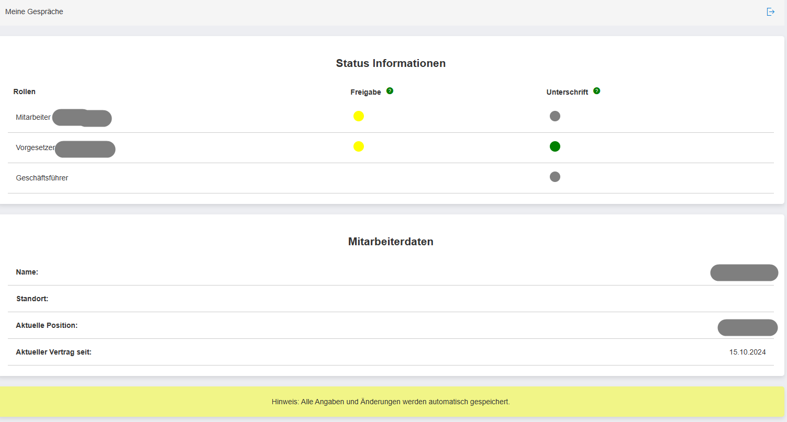

Employee Appraisal Web App is a cutting-edge solution designed to facilitate structured employee appraisals, goal-setting, and performance tracking. This web application enables HR departments to seamlessly manage appraisal records, define objectives, and provide feedback in an intuitive and secure environment.

Key Features:
- Employee Appraisal Management: Document and track employee performance reviews, including feedback from both employees and management.
- Goal Definition and Planning: Set measurable goals and objectives during appraisals, fostering growth and aligning personal development with company targets.
- Meeting and Notification System: Automatically schedule meetings and send notifications to employees and supervisors upon status changes or new appraisals.
- Real-time Status Updates: Employees and managers receive real-time updates and progress reports through Azure Notification services.
- Secure Authentication: Integrated with Microsoft Entra ID (Azure AD) for secure user authentication, utilizing MSAL for seamless Single Sign-On (SSO).
Technical Specifications:
- Frontend: Developed using React and TypeScript for a fast and responsive single-page application (SPA).
- Backend: Built with .NET Core (C#) and Azure Functions to handle employee data, manage appraisals, and perform server-side logic.
- Infrastructure: Fully hosted on Azure resources, including SQL Database, Azure Functions, and App Services.
- Data Access: Employee data is retrieved via Microsoft Graph API and stored in a centralized SQL Database.
- Data Communication: OData is used to communicate between the front end and SQL database, ensuring efficient data retrieval and updates.
- State Management: The application uses Zustand for lightweight, efficient global state management across the SPA.
- Performance Optimization: Includes debouncing and optimized Axios requests to improve performance during API calls.
How It Works:
- Users log in via Microsoft Entra ID (Azure AD) and access appraisal records based on their role and permissions.
- Appraisals are conducted and stored digitally, with management feedback documented directly within the system.
- Employees and managers receive automated notifications for appraisal creation, status changes, and scheduled reviews.
- Appraisal meetings are added to Outlook calendars, streamlining the review process and ensuring all parties are notified.